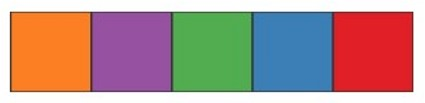
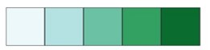
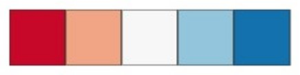
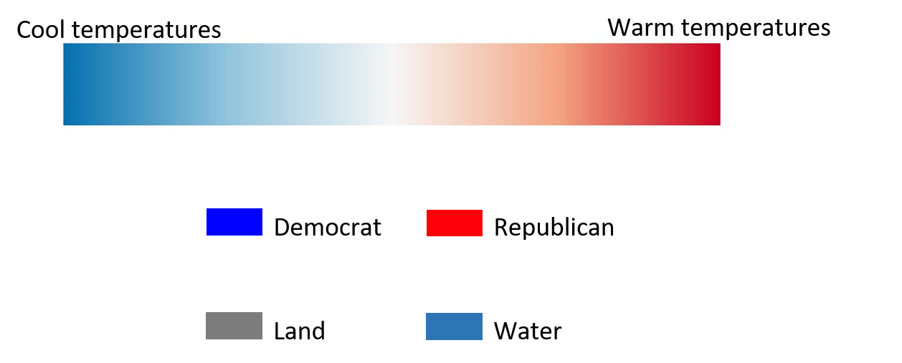
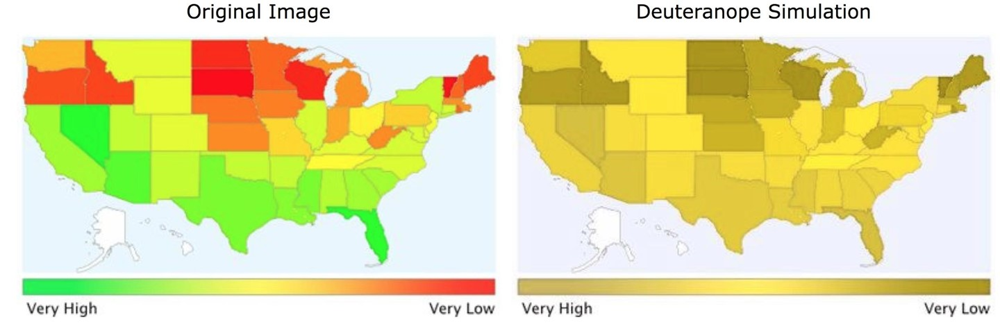
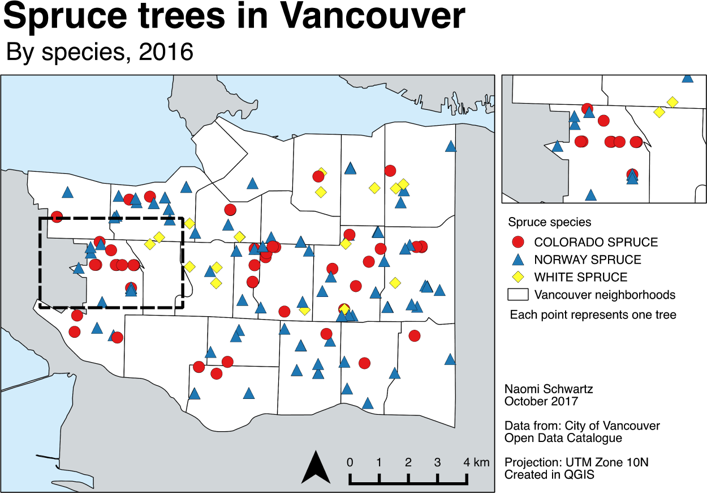
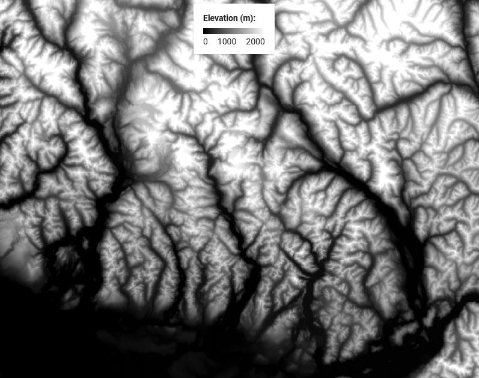

Visualizing Data
Cartography
The art and science of making maps.
- Why do we make maps?
- To transmit spatial information to a map reader
- Data and analyses are meaningless, unless conveyed effectively
- Decide what you want to communicate and to whom
Cartography
Good Maps
- Concise
- Accessible
- Aesthetically pleasing
Bad Maps
- Cluttered, ineffective, misleading
- Inaccessible to target audience
- Ugly
A Bad Map
Excellent example of a bad map showing really interesting information.
- Too much information
- Too many colors
- Text is way too small
A Better Map
Cleaner, less complex presentation.
- Too much information
- Too many colors
- Text is way too small
TopHat Question 1
Cartography is the ___ and ___ of making maps.
Design Principals
Give the viewer the most information in the shortest time with the least ink in the smallest space.
- Complex ideas communicated with clarity, precision, and efficiency.
- Maximize data-to-ink ratio (i.e. more data, less other stuff).
- Erase non-data ink, within reason.
Design Principals
The best maps can be interpreted quickly and easily.
- Title: Clear and to the point
- Content: Patterns are obvious, no "extra" information
Design Principals
The best maps can be interpreted quickly and easily.
- Content: Takes longer to read, but subject matter is more complex
- Minimizes "extra" information
- Simplifies geometry

Data Symbolization
The techniques we use to represent information on a map.
- The choices we make will convey aspects of the data
- Color & brightness
- Shapes & lines
- Characters & fonts
- Position & size
- Some choices may lead to assumptions being made about the data
- Intentionally or otherwise
Color
The HSV scale describes three components.
- Hue: the dominant wavelength
- Typical association with the term "color"
- Saturation: the intensity of one color
- All red or only a little red?
- Value: the brightness of one color
- Lightness or darkness, how much light is reflected?
Color Choice
It is important to choose the right kind of color map.
- Qualitative: Different hues
- Same value and saturation
- Sequential: Single hue
- Increasing saturation or value
- Diverging: Opposing hues
- Decreasing saturation toward center
Qualitative: Nominal

Sequential: Ordinal & Ratio

Diverging: Interval

TopHat Question 2
This type of color map would be best suited for which variable?
- Land use (Forest, Agriculture, Urban, etc.)
- Temperatures (in Kelvin)
- Temperatures (in Celsius)
- Zoning Density (High, Medium, Low, etc.)
Color Choice
Some colors have implicit assumptions depending on the context.
-

Color Accessibility
About 4.25% of people are colorblind, red-green is the most common. Color Brewer is a great resource.
-

What Type of Are We Data Representing?
Discrete:
- Points/lines/shapes
- Hues
-

Continuous:
- Surfaces, contour lines
- Saturation and value
-

What is the Measurement Scale?
Nominal:
- Dashes, shapes
- Different Hues (colors)
- Do Not choose colors or sizes that imply a difference in magnitude

What is the Measurement Scale?
Ordinal, Interval, or Ratio:
- Graduated symbols, line weights
- Different shades/intensities
- Do Not choose colors or shapes that imply a difference in category
Visual Hierarchy
The relative importance of features is implied by a maps layout. Our perception is influenced by the order in which we see things and how big / bold they are.
Placement
- Center first
- Top to bottom
- Left to right
Font size
- Large
- Medium
- Small
Intensity (value)
- Light
- Medium
- Dark
TopHat Question 3
Visual hierarchy describes how some hues (colors) are more important than others and how the choice of hue influences our perception of a map.
- True
- False
Stylistic Guidelines
- Clear labeling to prevent ambiguity and confusion.
- Minimize assumptions about your audience
- Proof your map text
- Consider if all map elements are necessary.
- Scale bars, North arrows, etc.
- Minimize “chart junk”
- Use appropriate color schemes.
- Colorblind friendly
- High contrast
- Suited for data type
Stylistic Guidelines
North arrows scale bars
- North arrow
- Doesn't work in circumpolar area
- Not needed for large/familiar regions
- Scale bar
- Not always needed if its a large/familiar region
- Scale text can often suffice
- Depending on projection (i.e. Mercator), scale will vary drastically across the map
Stylistic Guidelines
North arrows scale bars
- North arrow
- Needed if it's not a familiar region or if north is not up
- Scale
- Needed if it's a small/unfamiliar region
- For multiple maps are at different scales
- Needed if navigation is important
- i.e., a hiking map
So Many Mistakes!!
- Poor use of map space
- Wasted white space
- Not centered
- Poor color choice
- Not colorblind friendly
- Not all map elements are visible
- Text/font issues
- North arrow
- Placement
- Size & style
- Scale bar
- Wrong units!
So Many Mistakes!!
- Legend issues
- Avoid unnecessary text
- Don't title it Legend
- Make sure entries are meaningful
- Get rid of underscores
- No name / affiliation, date, or data source
- Be transparent, readers deserve to know:
- Who made the map (individual / organization)?
- When was the map made?
- Where did relevant data come from?
Cleaner Presentation
- Area of interest takes up most of the map space.
- Name, affiliation, source.
- More meaningful legend entries.
- Proper sizing/placement of map elements.
- More pleasing color choice, easier for colorblind people to read.
TopHat Question 4
Your maps always need to have a title, scale bar, and north arrow.
- True
- False
Cartographic Principals
These are just stylistic guidelines!
- Cartography is an art, there are no steadfast rules
- Just best practices
- Feel free to play around with styling
- Just be able to justify your choices
- Not all spaces “want” to be mapped
- Sometimes you need to make aesthetic compromises to make an effective map